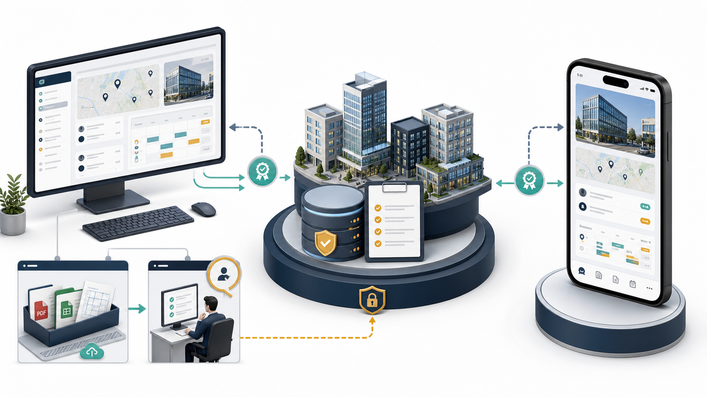

LEASEFLOW · UNIFIED WEB & MOBILE SERVICE IA · V2
웹은 앱의 데스크톱 버전이고, 관리 기능은 그 위에 더해진다
사무실과 현장에서 같은 건물정보·자연어 업무·업무기록을 이어서 사용하는 하나의 서비스
새 웹 컨셉
모든 팀원이 웹에서 앱과 동일한 업무를 수행한다. 권한 있는 사용자에게만 `건물정보 업로드`와 `주간업무 설정`이 추가된다.
모든 팀원이 웹에서 앱과 동일한 업무를 수행한다. 권한 있는 사용자에게만 `건물정보 업로드`와 `주간업무 설정`이 추가된다.
ONE PRODUCT · TWO SURFACES
웹과 앱은 같은 서비스에 접속한다
건물정보, 자료, 업무 스레드, 주간 이슈는 하나의 공통 데이터다. 사무실에서는 넓은 화면과 키보드로, 현장에서는 모바일과 음성으로 같은 업무를 이어간다.
웹 · 사무실자연어 검색 · 비교 · 편집 · 대량 자료 확인
앱 · 현장자연어·음성 · 빠른 조회 · 자료 준비 · 업무 기록

업무 홈의 중심은 자연어 업무창
메뉴를 찾아다니기 전에 사용자가 하려는 일을 바로 입력한다.
자연어 요청
“퍼시픽타워 최신 도면하고 임대조건 보여줘.”
“강남에서 500평 이상, 즉시 입주 가능한 건물 찾아줘.”
“이번 주 ○○자산운용 미팅에 들어갈 이슈 정리해줘.”
“지난달 KFT 면적 변경자료와 이전 도면 비교해줘.”
요청 의도·조건 확인
→
권한 내 최신정보·근거 검색
→
결과·자료·다음 행동 제안
기능 제공 기준
기본 업무는 동일하고, 정보관리 기능만 웹에 확장된다.
기능
웹
앱
자연어·음성 업무 요청
제공
제공
건물정보·최신 자료 검색
제공
제공
자료 묶음·메일 준비·업무 스레드
제공
제공
주간 이슈·보고서 확인
제공
제공
신규 건물정보 업로드·변경 확인
웹 전용
—
임대인별 주간업무 자동화 설정
웹 전용
—
같은 계정·같은 권한·같은 최신정보를 사용한다. 기기를 바꿔도 검색 조건, 업무 스레드, 보고 준비 상태가 이어져야 한다.
SHARED DATA CONTRACT
신규 정보가 팀의 공통 자산이 되는 조건
원본은 즉시 자산화업로드 파일과 수신정보를 원본 그대로 보관
새 정보는 먼저 후보추출값과 변경내용은 담당자 확인 전까지 미게시
확인 후 모두가 사용승인된 최신정보가 권한 내 웹·앱 검색에 반영
같은 정보로 주간보고임대인별 보고도 동일한 최신값과 업무기록을 참조